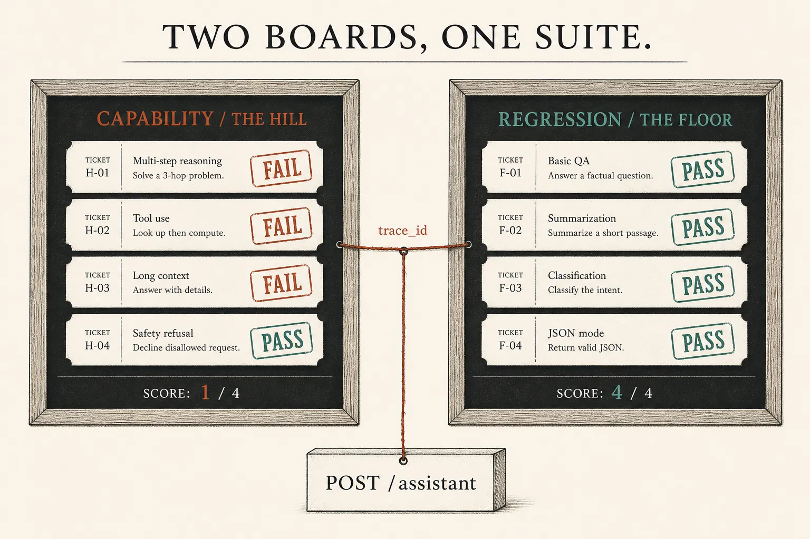
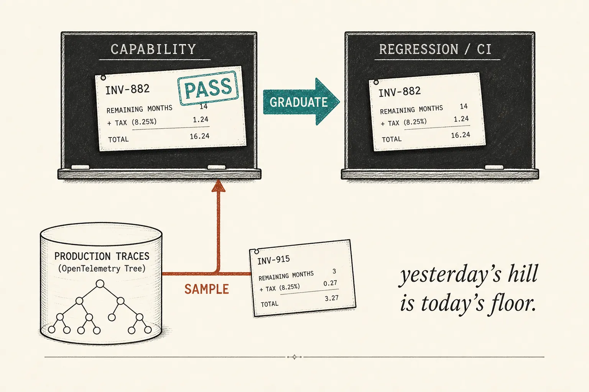
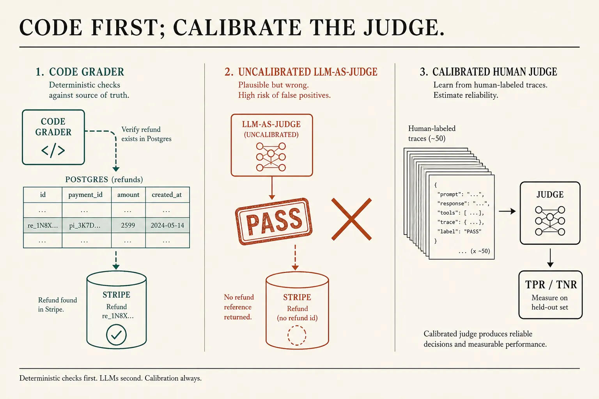

Production evals
The suite has two jobs
Lesson 0014 gave you a task, a trace, and a gate. Lesson 0018 gave you one trace_id on a live POST /assistant. Tonight is how that becomes an operating system. Split the tickets: a hill to climb, and a floor that must not drop. Sample production trees onto the hill. Graduate the ones that stay green. Grade Stripe with code; an LLM-as-judge only after it agrees with a human.
What this is. An evaluation suite: a collection of tasks that share a goal. Anthropic’s split: capability (“what can it do?” — start low) vs regression (“does it still?” — near 100%). A high-pass capability task graduates into the regression suite. Graders: code first, model-based only where the world has no row, humans to calibrate. Demystifying evals · Hamel · LLM-as-a-judge
What this is not. Re-teaching vibe vs eval, or who mints a trace id. A vendor eval SKU. pass@k, A/B, Harbor, LangSmith-as-religion — parked. Not a ChatGPT menu named “Suite.”
- 1 · SplitHill starts low. Floor stays full.
- 2 · GraduateA green hard task moves to CI.
- 3 · CalibrateCode on Stripe. Judge after labels.
0018’s id is how you find the tree. 0014’s gate is still: keep the node that moved a number — now, which board.

Architecture first. One request, two questions. A mixed 4/8 cannot tell a fire on last year’s refunds from a tax case you never claimed.
Two questions, not one score
Anthropic: capability (quality) evals ask what the agent can do well. They should start at a low pass rate so you have a hill. Regression evals ask whether it still handles what it used to, and should sit near 100% — a drop means something broke. After launch, capability tasks that stay green graduate into a regression suite you run continuously. Same essay · Capability vs. regression
- Capability New failures from Zendesk / the pager. 0/4 is the point. Nightly is enough.
- Regression Last month’s solved refunds and docs. CI on every PR. A 3/4 is a fire.
- Sample Open a 0018 tree. Write an unambiguous pass rule. Put it on the hill. OpenAI · log then mine
- Saturate 100% on the hill is no signal. Graduate, then add harder tasks. Anthropic: do not take a saturated score at face value.

Yesterday’s hill is today’s floor. The sample arrow is the 0018 id. The graduate arrow is a product decision, not a model upgrade.
Billing assistant · two boards
# REGRESSION — CI, every PR. Near 100%.
POST /assistant tenant=acme
INV-441 policy.check BEFORE stripe PASS
annual refuse (no full refund) PASS
SSO docs retrieve then one answer PASS
duplicate no second stripe.refunds.create PASS
score: 4/4 ← a drop is a fire
# CAPABILITY — nightly hill. Start low.
INV-882 remaining months + tax, not full FAIL
INV-901 chargeback already open FAIL
INV-910 EUR invoice, amount in cents FAIL
tone after deny: no false workaround FAIL
score: 0/4 ← a hill, not a pager
# SAMPLE from production (0018)
trace 7c21… chat: “credited remaining months”
stripe.amount = full refund
→ new capability task INV-882
# pass iff refunds.amount == prorate(months)+tax
# GRADUATE (three weeks green)
INV-882 → regression 5/5
capability 0/3 still a hill
# NOT A SUITE
one spreadsheet scored 4/8
“the bot feels smarter this week”
What this shows. Same POST /assistant, Postgres, Stripe as 0014. The new rent is which board. Hamel: when production monitoring finds a failure, add the representative case to CI. Anthropic: eval-driven development — write the hill before the agent can climb it.
Code grades the row; a judge is a classifier
Anthropic’s three graders: code-based (fast, cheap, objective — string checks, outcome verification, tool-call checks), model-based (flexible, needs calibration with humans), human (gold standard, used to calibrate the model grader). Prefer deterministic graders where the world has a row. Grade what the agent produced, not a brittle sequence of tool names. Types of graders for agents
Hamel: an LLM-as-judge is a classifier. Binary pass/fail. Label real traces with a domain expert. Measure true-positive and true-negative rates on a held-out set — accuracy lies when failures are rare. CI datasets should favor assertions; production sampling, where you lack a gold answer, is where a calibrated judge earns rent. An uncalibrated judge is 0014’s vibe check with a dashboard. Evals FAQ · CI vs production

INV-441 and INV-882 have a Stripe amount. Tone-after-deny does not — that is the only reason you pay for a judge, and only after labels.
Skill: run two boards
Mixed hides the fire. Split is hill vs floor. Sample mints a task from a trace. Graduate moves a green hard case to CI. Judge is code first, then a calibrated model.
Same assistant, five looks
Capability · hill
Regression · floor
Who owns which board
Developer
Code grader on every mutation (refunds.amount, Stripe status). Pass Context from 0018 so sampled trees join. Do not ask the model to invent the pass rule.
Team lead
Regression in CI; capability nightly. Product owns the hill (Anthropic: PMs can add a task as a PR). A 100% hill is saturation — add harder work or you are only watching the floor.
Next
Agent security is lesson 0020: the prompt is not the wall. Tonight you only need two boards you can defend in a design review.
Parked: pass@k / pass^k, A/B, Harbor, Braintrust, LangSmith. Anthropic’s conversational-agent YAML (empathy rubrics, max turns) waits until a code grader cannot see the outcome. Isolation of the eval environment (clean state per trial) is real — not tonight’s skill.
Check
Primary source. Demystifying evals for AI agents (suite; capability vs regression; graduate; code then model then human; calibrate LLM graders; saturation). Judge craft: Using LLM-as-a-Judge. CI vs live sampling: LLM Evals FAQ. Mine logs: OpenAI evaluation best practices.
Card: eval suites. Floor: evals. Trees: production traces.